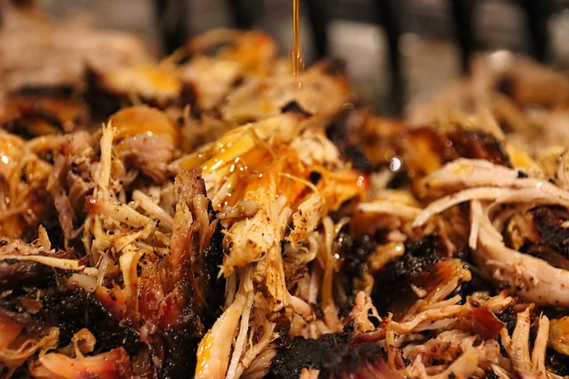

Pulled Pork recipe

Tasty Pulled Pork
The recipe will take some time to cook. The result however will be worth the waiting time.
Ingredients
- 2 kg pork shoulder
- 2 Onions
- 2-4 garlic cloves
- 500 mL chicken stock
- juice from 1 orange
- juice from 2 limettes
- 1 teespoon chilli powder
- 2 teespoons cumin
- 3 teespoons oregano
- Salt, pepper
Instructions
- Start by chopping the onoins into a few big pieces and finley chop your garlic. Then put your pork into the Slowcooker and add everything else.
- Let it cook for about 6 - 8 hour on high or over night on low.
- Take out the meat adn shred it. After that time it already should fall apart. Depending on your meat you have to make sure to remove bone pieces.
These will be unpleasant to eat if you forget them.
- Put everything including the broth from your slowcooker (discard the bones!) into a fryingpan and boil off the water. Afterwards continue until your pulled pork
has the browning of your liking
You can eat the meat as is or make for example burgers with coleslaw. Another way to use it would also be with tortillias and a filling to your liking. You will
most likley have enough for a few days with this batch.